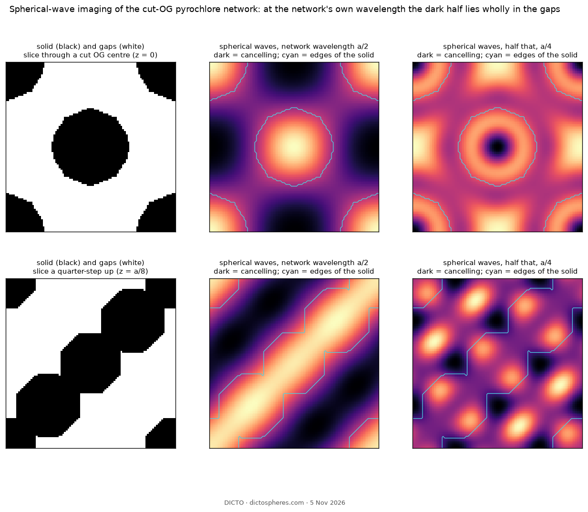
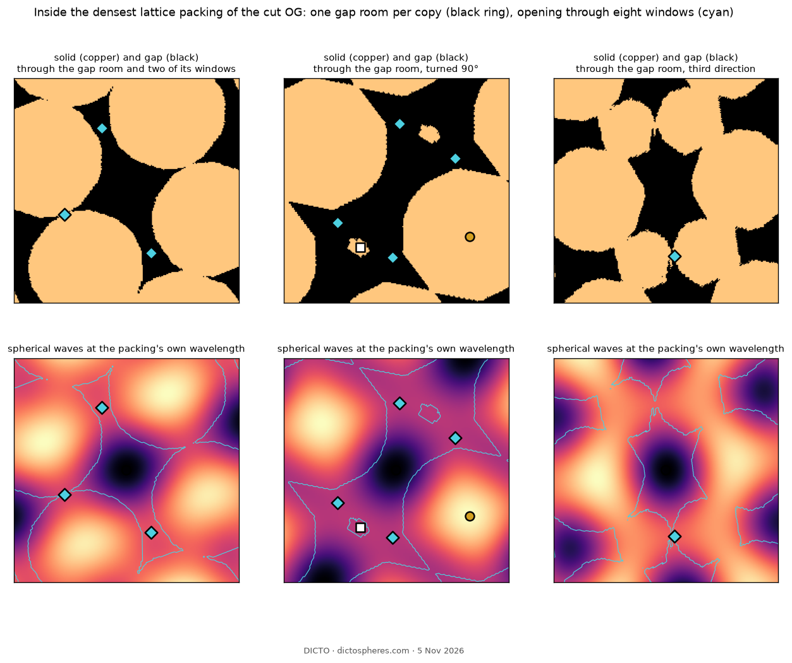
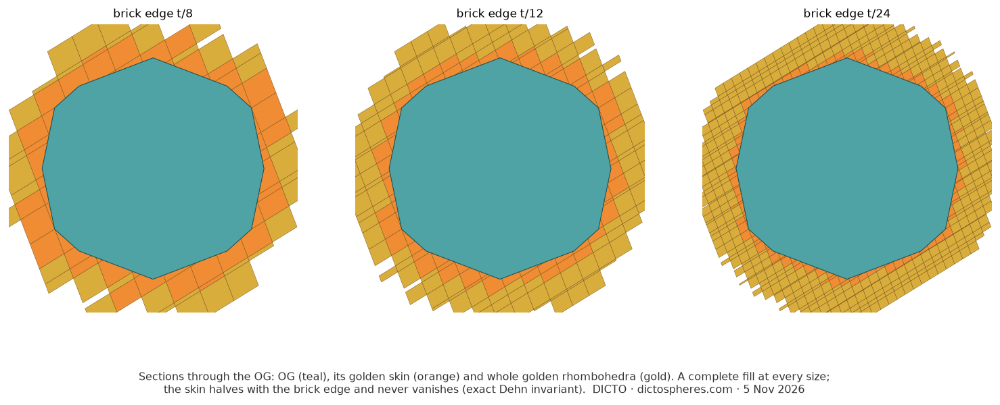
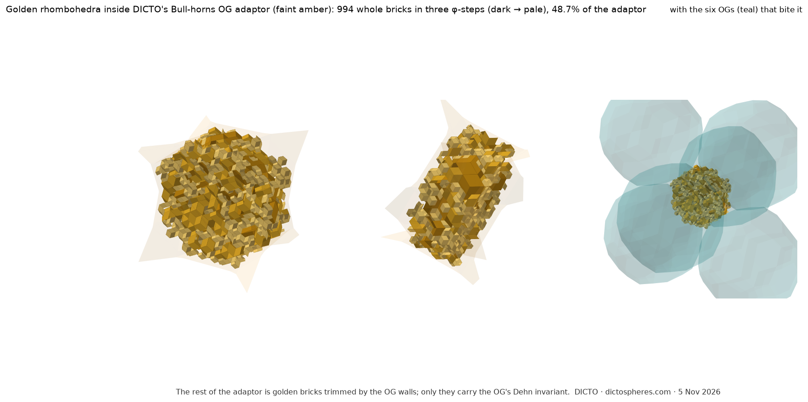

Spherical waves, harmonics and golden bricks find, describe and fill the gaps of a packing; the Dehn invariant says exactly what can never be filled
A packing of solids leaves gaps. Most of the time we only measure how much. Here we look at them: we send waves through the packing and the gaps show up dark; we read the dark places like a chemist reads the cloud of electrons in a crystal, as rooms joined by windows; we listen to each room's shape; and we grow golden bricks into it until it is full. One thing no brick can ever fill, and an old invariant from 1901 tells us exactly what it is.
The toolkit grew out of listening. In The Silent Golden Station (#94) a solid's corners, seen from its centre, became notes on a sphere, each degree of spherical harmonic a tone: on the sweep from the octahedron to the cube the cubic tone falls silent exactly once, at Icosaxes. In four dimensions the same test hears the 600-cell, DICTO's White Queen, as silent through every tone up to degree 11. DICTO then widened the search to harmonics, music, waves and particles and resonance (The DICTO Concordance, Part 5): in The Golden Ladder the golden stations of the sweep became the limits of ladders of particle multiplets, half the sweep one musical octave, and at its top rung the rings of the E8 picture stand in the ratios of the eight masses that resonate in a chain of magnetic spins, the second φ times the first. Each of these heard one shape at a time. The next step, DICTO's, was to let waves run through a whole packing in three dimensions, where they meet, add and cancel between the pieces: spherical waves. Where they cancel, the gaps are.
Spherical waves. Every point of the solid sends out a spherical wave sin(kr)/(kr); the waves add up to a field over all space (computed by fast Fourier transform on one period). Where they cancel the field is dark. At the packing's own wavelength the dark places are the gaps. Critical points. As in the electron density of a crystal (Bader 1990), the field's peaks are atoms, its saddles with two falling directions are bonds, those with one are rings (windows) and its minima are cages (rooms); in a periodic field atoms − bonds + rings − cages = 0, a built-in check. Harmonics. The shape of a room heard from its centre, as in DICTO's harmonic fingerprint (#94): odd tones vanish for a room with a centre of symmetry, the l = 4 tone is cubic, icosahedral shapes have none. Golden bricks. Golden rhombohedra with edges along the solid's own five-fold axes, grown greedily (darkest places first) or cut from one icosahedral tiling (de Bruijn's dual grid), in φ-steps from coarse to fine. Exact certificates. Every kept brick lies wholly inside its room and every pair of bricks is disjoint (solid booleans, one by one); the rest of the room is the finest bricks trimmed by the walls, which cover it because a tiling covers space. The Dehn invariant decides what bricks can never do (§2).
Proof. In exact coordinates (ℚ(√5)) each solid has two kinds of edge. OG: 60 kite–kite edges of length (9 + √5)/57 at dihedral angle 156.7186°, and 120 kite–hexagon edges of length √(2/9 − 2√5/27) at 156.1998°. Cut OG: 60 triangle–pentagon edges of length 2/9 at 159.9232°, and the same 120 hexagon-rim edges at 156.1998°. In each solid the two lengths are rationally independent (the rim length involves √3, or its ratio to 2/9 is not a square in ℚ(√5)), so the invariant vanishes only if both angles are rational multiples of π. Each cosine has degree at most 4, so an angle kπ/n would need φ(n) ≤ 8, n ≤ 30; no such angle matches. ∎
Proof. Lattice case: the Voronoi cell C of a lattice is a parallelohedron, a zonohedron, with Dehn(C) = 0. C is A together with the parts of the solids that fall in C; translated by lattice vectors these parts reassemble exactly one solid, and the Dehn invariant adds over dissections, so 0 = Dehn(A) + Dehn(solid). Bull-horns: a cube of the double network's period holds, after translating parts back, two OGs and six adaptors, all congruent, so 0 = 2·Dehn(OG) + 6·Dehn(A). By Theorem 1 these are nonzero, and pieces with rational dihedral angles all have zero Dehn invariant. ∎
So every golden filling below must leave pieces that are not golden rhombohedra; the question is only how few and how thin.
A known case first. On the diamond network of regular-triangle cut OGs (the pyrochlore network of Pentagons for the Kites), at the network's own wavelength the darkest half of space lies wholly in the gaps: it covers 80% of them and none of the solid (Figure 1).

An unknown case. The densest lattice packing of the cut OG (density 0.776244) had never been looked at. Its field has, per copy, one atom, five bonds, five rings and one cage (1 − 5 + 5 − 1 = 0; grids 48 and 72 agree). The cage is one gap room per copy, at half a lattice vector, a centre of symmetry of the packing. Four ring points per cell lie in the gap, so each room opens through eight windows: the gap is one connected network of rooms. Of the twelve contacts of a copy, five pairs read as bonds and one pair as a ring point inside the solids: a weak contact (Figure 2).

Closing the room. The Voronoi cell of the room centres minus the cut OGs is one solid without holes, of volume 0.326555, exactly the gap per copy; copies overlap neither each other nor the cut OGs. The cut OG (77.6%) and this room adaptor (22.4%) fill space, both by translation only (Figure 3). It fills 31% of its convex hull, sphericity 0.374.
Harmonics choose, walls decide. The room's harmonics have no odd tones and half their weight in l = 4, a cubic tone; yet golden rhombohedra fill it better than rhombic-dodecahedron rhombohedra (39% against 37% at one size), because they share the cut OG's five-fold directions. Grown in φ-steps, darkest places first, golden bricks fill 27, 42, 58, 78 and 84% of the room; adding the regular bricks gains almost nothing. What is left is one connected web: a skin on the walls (42% of it within one grid step of the solid, against 19% of all gap) and seams where bricks grown from different seeds meet.
One coherent grain completes the room. Bricks cut from one icosahedral tiling meet without seams. Kept only when wholly inside the room and clear of all others, 1055 whole golden rhombohedra in three φ-steps fill 38% of the room; the finest bricks of the same tiling, trimmed by the walls, fill the rest: whole + trimmed = the room to 7 × 10⁻⁵ (float). By Theorem 2 the trimmed pieces can never disappear.
The original OG in a golden skin. Put the OGs on a lattice spanned by three of their own five-fold axes (a scaled prolate golden rhombohedral lattice, OG density 0.5633) and tile space by the prolate golden rhombohedron of edge t/m. The bricks that touch an OG, minus the OG, form its golden skin. OG + skin + whole bricks fill space exactly, at every m, with three shapes. The skin halves when the brick edge halves (32.3, 22.1, 11.5, 5.9, 2.9% of space at m = 8, 12, 24, 48, 96): at m = 96, 93% of the gap is whole golden bricks (Figure 4). By Theorem 1 the skin is never zero.

In the body-centred double network the OGs fill 77.4% of space and DICTO's Bull-horns adaptor the rest, one shape, three per OG (#36). Rebuilt from its definition (volume 0.111898), the adaptor is completed by one coherent golden tiling: whole golden rhombohedra fill 25, 37, 49, 58 and 66% of it in five φ-steps (12483 bricks), and the trimmed finest bricks the rest; whole + trimmed = the adaptor to 3 × 10⁻⁵ (Figure 5). The bricks fill the body; the thin horns that reach between the OGs are where the trimmed pieces sit.

Golden rhombohedra cannot do it (Theorem 2). Golden tetrahedra can carry a Dehn invariant: Ogievetsky and Papadopolos (1999) use the Dehn invariants of the six golden tetrahedra and of the Mosseri–Sadoc tiles, among them DICTO's AXE and CLEO (#19), to study icosahedral tilings. Whether golden tetrahedra together with golden rhombohedra can cancel the OG's two edge terms exactly, and so fill its gaps with golden pieces only, is the next question. Also open: exact forms of the room adaptor and the skin; splitting the skin into a few repeating edge wedges; a denser golden lattice for the OGs.
Known: the Dehn invariant and its additivity (Dehn 1901; Boltianskii 1978); zonohedra have zero Dehn invariant; critical points of densities and their periodic count (Bader 1990); spherical-harmonic order parameters (Steinhardt, Nelson and Ronchetti 1983); the dual-grid construction of icosahedral tilings (de Bruijn 1981; Kramer and Neri 1984); Dehn invariants in icosahedral tilings (Ogievetsky and Papadopolos 1999). New here, as far as the sources checked go: Theorems 1 and 2 for the OG, the cut OG and their adaptors; the gap reading of the densest cut-OG lattice packing and its room adaptor; the golden fills and the golden skin. The tools are classical; their use together on a sculptor's solids is this paper's contribution.
Sources checked: the reference library (searches “Steinhardt bond orientational order; Bader critical points; de Bruijn dual grid; Kramer Neri; Dehn invariant zonohedra”, “E8 icosians 600-cell”, 5 Nov 2026), Ogievetsky–Papadopolos 1999 read (abstract and introduction).